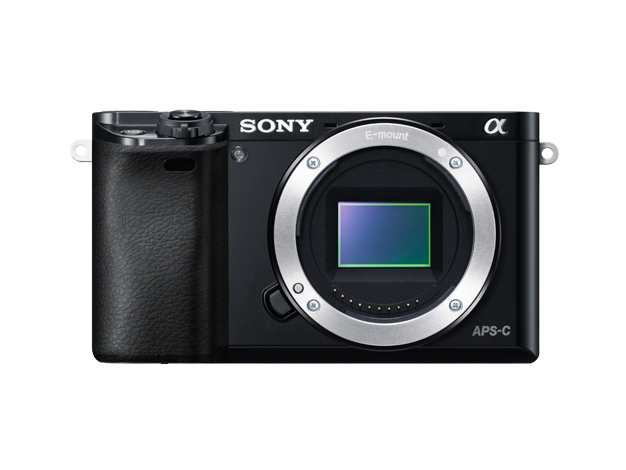
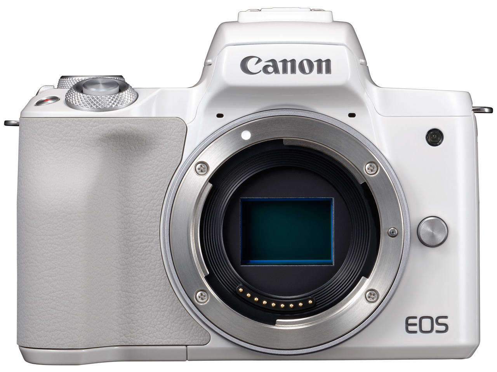
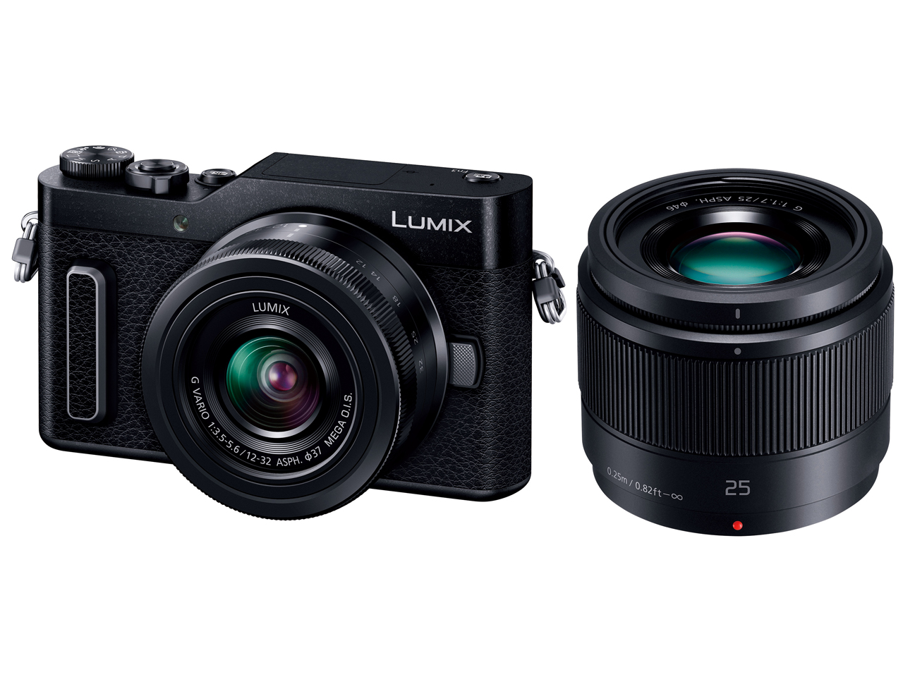

もくじ
なぜ「5万円以下の中古ミラーレス」なのか
「カメラを趣味にしてみたいけど、いきなり10万円は出せない」。自分もそうだった。EC担当として毎日スマホで商品写真を撮っていて、ふと「もう少しちゃんとしたカメラで撮ってみたい」と思った。でもカメラの世界は沼が深い。調べるほどに価格が上がっていく。
日本経済新聞が報じたところによると、デジカメの平均単価は2020年からの3年間で約2倍に跳ね上がった。2026年現在、新品のミラーレス一眼はエントリーモデルでも8〜12万円が相場になっている。「5万円以下」を新品で探すのは正直きつい。
ただ、中古まで視野を広げると話が変わる。2〜3年前まで現役だったモデルが、状態の良い中古で3〜5万円に落ち着いているケースが多い。センサーの性能は5年やそこらでは大きく変わらないし、レンズは資産として使い続けられる。「まず1台触ってみる」なら、中古の型落ちミラーレスが一番コスパが良いと自分は感じた。
今回は、中古相場が5万円以下に収まっていて、初心者が最初の1台として選びやすい3機種を調べてまとめた。
① SONY α6000 ─ 中古ミラーレスの定番
SONY α6000（ILCE-6000）

2014年発売 ／ APS-C ／ 約2420万画素 ／ 約344g（本体のみ）
中古相場：レンズキットで3〜4.5万円2014年発売と聞くと古く感じるが、いまだに「5万円以下のミラーレスといえばコレ」という立ち位置にいる。価格.comのレビューでも満足度4.5超で、口コミ数は19,000件を超える。
② Canon EOS Kiss M ─ 初心者向けの操作設計
Canon EOS Kiss M

2018年発売 ／ APS-C ／ 約2410万画素 ／ 約354g（本体のみ）
中古相場：ボディのみ3.5〜5万円 ／ レンズキット5〜6万円Canonの「Kiss」シリーズは長年の入門カメラ定番で、EOS Kiss Mはそのミラーレス版。写真やイラストで撮影モードを説明する「ビジュアルガイド」や、シーンを自動判別する「シーンインテリジェントオート」など、カメラ任せで撮れる機能が充実している。価格.comのレビューでも操作性への評価が高い。
③ Panasonic LUMIX GF9 ─ とにかく小さく軽い
Panasonic LUMIX DC-GF9

2017年発売 ／ マイクロフォーサーズ ／ 約1600万画素 ／ 約269g（本体のみ）
中古相場：ボディ2〜3万円 ／ レンズキット3〜4.5万円3機種のなかで一番小さくて軽い。重さはスマホとほぼ変わらない約269g。カバンに放り込んで持ち歩くカメラとして、これ以上のサイズ感はなかなかない。180°チルト液晶で自撮りにも対応していて、SNS用の写真を撮る人にも使い勝手がいい。
3機種を比較してみた
| SONY α6000 | Canon EOS Kiss M | Panasonic LUMIX GF9 | |
|---|---|---|---|
| センサー | APS-C | APS-C | マイクロフォーサーズ |
| 画素数 | 約2420万 | 約2410万 | 約1600万 |
| 重さ（本体） | 約344g | 約354g | 約269g |
| 4K動画 | × | ○ | ○（4Kフォト） |
| 自撮り液晶 | × | ○（バリアングル） | ○（180°チルト） |
| マウント将来性 | ◎（Eマウント現役） | △（EF-M終了） | ○（MFT継続） |
| 中古レンズキット相場 | 3〜4.5万円 | 5〜6万円 | 3〜4.5万円 |
まとめると、レンズの将来性も含めて長く使いたいならα6000、操作のわかりやすさ重視ならEOS Kiss M、とにかく持ち運びやすさを優先するならLUMIX GF9、という使い分けになる。どれも「スマホの次の一歩」としては十分な画質で、差が出るのは持ったときのフィーリングや、撮りたいシチュエーションによるところが大きい。
中古カメラはどこで買う？
初心者にとって一番不安なのは「中古で大丈夫なのか？」という点だと思う。自分が調べた限り、買い先は大きく3パターンに分かれる。
カメラ専門店（マップカメラ、カメラのキタムラなど）
プロのスタッフが検品していて、状態のランク付け（A・AB・Bなど）が明確。保証付きの店が多く、初めての中古カメラならここが一番安心。マップカメラはネットでも購入できる。カメラのキタムラは全国に店舗があるので実物を見て買える。
大手中古家電ショップ（ソフマップ、ハードオフなど）
カメラ専門店よりやや安いことがある。ただし検品の粒度は店舗によってばらつきがある。ハードオフのジャンクコーナーは上級者向け。
フリマアプリ（メルカリ、ラクマなど）
最安値で見つかることが多いが、出品者の説明と実物の状態にギャップがあるリスクは否めない。シャッター回数やセンサーの傷は写真だけでは判断しにくいので、初心者は避けるのが無難。
カメラと一緒に買っておくもの
本体とレンズだけだと地味に困ることがある。最低限これだけは一緒に用意しておくと安心、というものをまとめた。
| 必要なもの | 予算目安 | メモ |
|---|---|---|
| SDカード（64GB以上） | 1,000〜2,000円 | UHS-I / V30以上を選べばまず問題ない。詳しくはSDカードの選び方メモにまとめた |
| 予備バッテリー | 1,500〜3,000円 | 中古カメラのバッテリーはへたりがち。社外品でも実用上は十分 |
| 液晶保護フィルム | 500〜1,000円 | 中古だと最初から貼ってあることもある |
| ブロアー | 500〜1,000円 | レンズのホコリを飛ばす道具。息で吹くのはNG |
合計3,000〜5,000円くらい。本体予算の1割程度をアクセサリーに見込んでおくと、買ってすぐ快適に使い始められる。
よくある質問
5万円以下のカメラでもスマホより綺麗に撮れますか？
撮れます。ただし注意点がひとつ。スマホは撮った瞬間にAIが自動補正をかけていて、「撮って出し」で見映えが良いように作られています。一方、ミラーレスの写真はそのままだと地味に見えることがあります。少し設定を覚えたり、レタッチアプリで軽く補正するだけで、スマホでは出せないボケや階調が活きてきます。
中古カメラの「シャッター回数」って気にしたほうがいいですか？
ミラーレスの場合、メカシャッターの耐久回数は10万〜20万回と言われています。中古で3〜5万回程度なら全く問題ありません。ただし出品者が開示していないケースも多いので、カメラ専門店で購入すれば状態の評価に含まれていて安心です。
レンズキットのレンズだけでどこまで撮れますか？
標準ズームレンズ（16-50mmや15-45mmなど）があれば、スナップ、風景、テーブルフォト、ポートレートなど日常の大半の撮影はカバーできます。ズームして遠くを撮りたい（運動会、野鳥など）場合は望遠レンズが別途必要です。まずはキットレンズで撮りまくって、「足りないな」と感じたタイミングで次のレンズを検討するのがおすすめです。
カメラ以外に必要なものはありますか？
SDカード、予備バッテリー、液晶保護フィルム、ブロアーは最低限あると安心です。合計3,000〜5,000円程度で揃います。詳しくはこちらにまとめています。